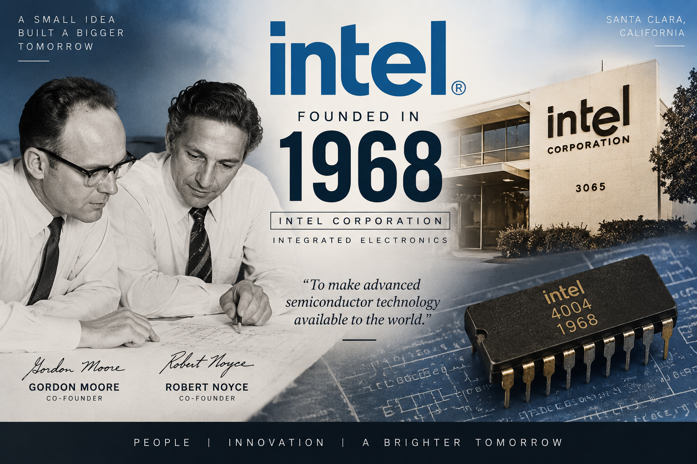
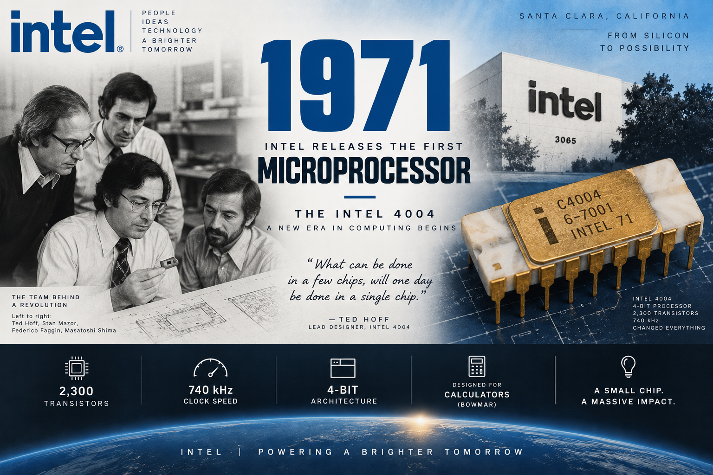
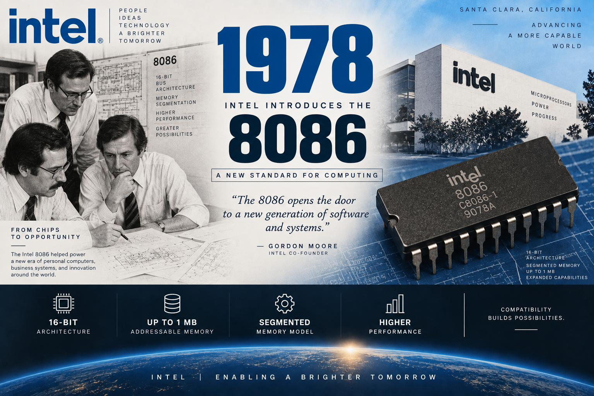
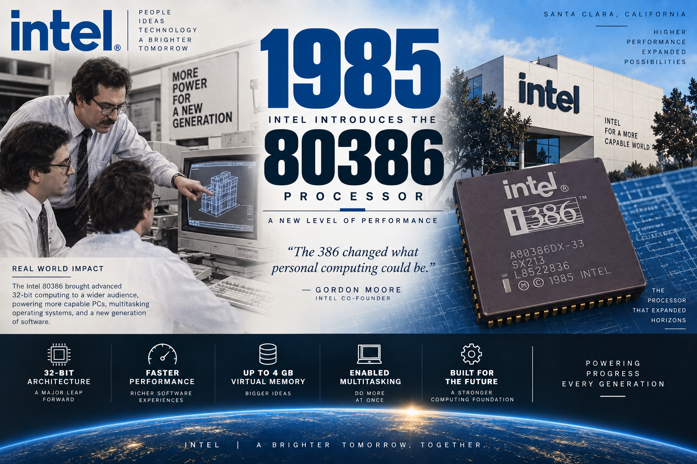
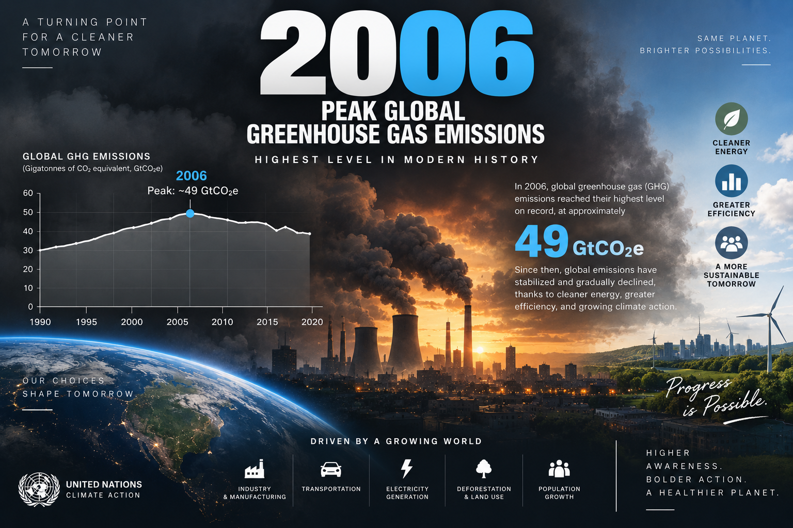
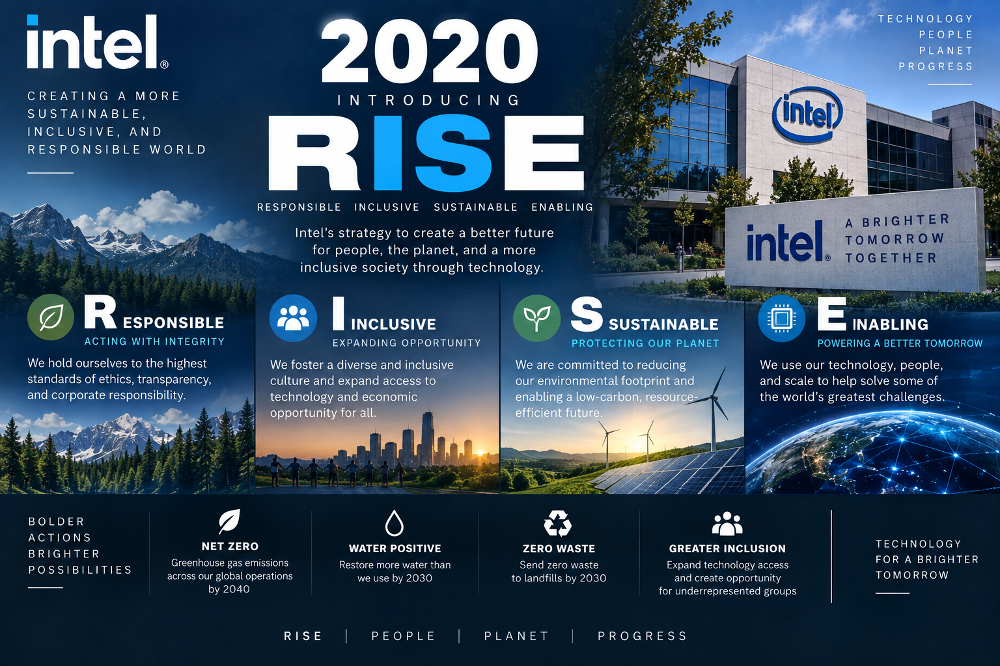
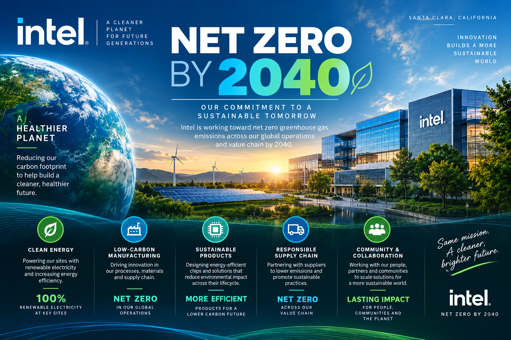
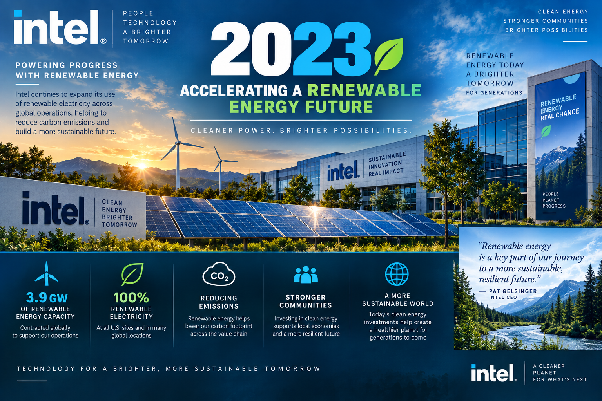
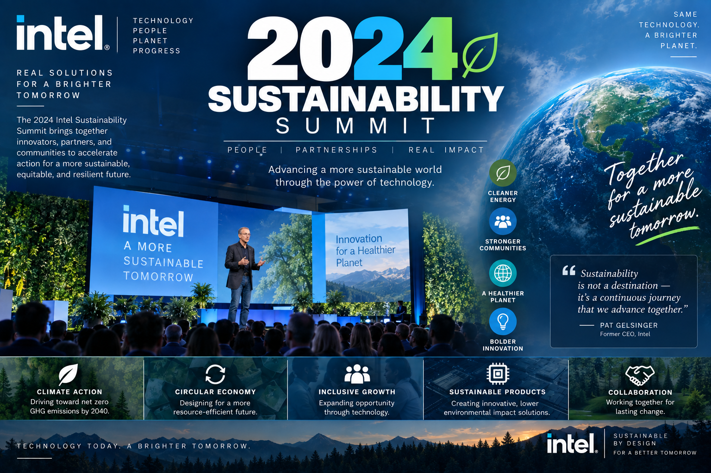

Climate Action
We reduce emissions in manufacturing and power our operations with cleaner energy sources.
Intel sustainability
Look at Intel's journey through time, discovering how our commitment to innovation has shaped a more sustainable future for technology and the planet.
Our commitment
We reduce emissions in manufacturing and power our operations with cleaner energy sources.
We improve water efficiency and support responsible use across our global facilities.
We design longer-lasting technology and improve reuse, repair, and recycling opportunities.
Why it matters
Milestones
Explore the milestones that shaped Intel's path toward more sustainable innovation.

Robert Noyce and Gordon Moore rename the newly formed company NM Electronics to Intel Corporation, creating the foundation for decades of innovation.

Intel introduces the 4004, the world's first commercial microprocessor, setting the stage for the digital age.

The 8086 processor helps establish the x86 architecture widely used in personal computers and servers.

The 386 processor brings 32-bit processing to mainstream computing, improving performance and productivity.

This year marks Intel's highest annual greenhouse gas emissions, prompting a long-term push for cleaner manufacturing.

Intel introduces its RISE strategy and 2030 goals, addressing climate action, water stewardship, and waste reduction.

Intel commits to net-zero greenhouse gas emissions across global operations by 2040, building on prior environmental investments.

Intel reaches 99% renewable electricity usage globally, helping reduce emissions and improve sustainability outcomes.

Intel brings together supply-chain partners and leaders to collaborate on sustainable semiconductor manufacturing.